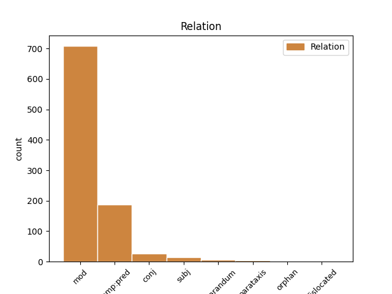
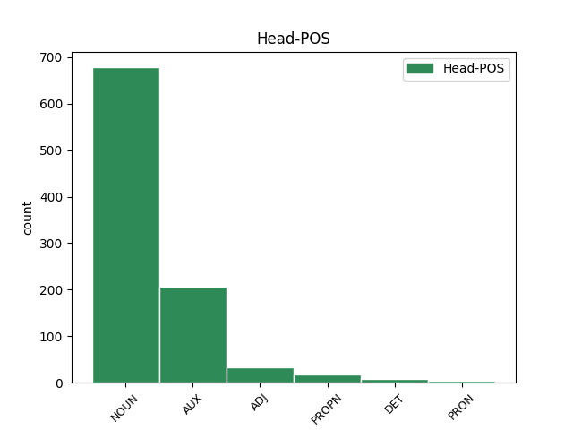
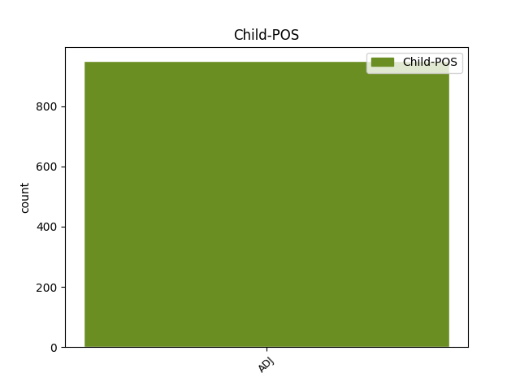

Distribution of features within this leaf



Agreement Rules sorted by frequency.
- When the dependent token is the modifer(mod) of the head token, and the head token is NOUN and the dependent token is ADJ.
1 od _ _ _ _ 0 _ _ _
2 fructala _ _ _ _ 0 _ _ _
3 voda _ _ _ _ 0 _ _ _
4 samo _ _ _ _ 0 _ _ _
5 da _ _ _ _ 0 _ _ _
6 pač _ _ _ _ 0 _ _ _
7 eee _ _ _ _ 0 _ _ _
8 z _ _ _ _ 0 _ _ _
9 okusom _ _ _ _ 0 _ _ _
10 ampak _ _ _ _ 0 _ _ _
11 da _ _ _ _ 0 _ _ _
12 ni _ _ _ _ 0 _ _ _
13 nič _ _ _ _ 0 _ _ _
14 drugega _ _ _ _ 0 _ _ _
15 kakor _ _ _ _ 0 _ _ _
16 sama sam ADJ Agpfsn Case=Nom|Degree=Pos|Gender=Fem|Number=Sing 17 mod _ msd=Ppnzei|word=sama
17 voda voda NOUN Ncfsn Case=Nom|Gender=Fem|Number=Sing 0 _ _ _
18 pa _ _ _ _ 0 _ _ _
19 sadje _ _ _ _ 0 _ _ _
1 samo _ _ _ _ 0 _ _ _
2 je biti AUX Va-r3s-n Mood=Ind|Number=Sing|Person=3|Polarity=Pos|Tense=Pres|VerbForm=Fin 0 _ _ _
3 dobro dober ADJ Agpnsn Case=Nom|Degree=Pos|Gender=Neut|Number=Sing 2 comp:pred _ msd=Ppnsei|word=dobr
4 veš _ _ _ _ 0 _ _ _
1 eee _ _ _ _ 0 _ _ _
2 še _ _ _ _ 0 _ _ _
3 mi _ _ _ _ 0 _ _ _
4 sem _ _ _ _ 0 _ _ _
5 na _ _ _ _ 0 _ _ _
6 trenutke _ _ _ _ 0 _ _ _
7 zelo _ _ _ _ 0 _ _ _
8 občutljiva _ _ _ _ 0 _ _ _
9 na _ _ _ _ 0 _ _ _
10 mrzlo mrzel ADJ Agpnsa Case=Acc|Degree=Pos|Gender=Neut|Number=Sing 0 _ _ _
11 eee _ _ _ _ 0 _ _ _
12 pa _ _ _ _ 0 _ _ _
13 toplo topel ADJ Agpnsa Case=Acc|Degree=Pos|Gender=Neut|Number=Sing 10 conj _ msd=Ppnset|word=toplo
1 ampak _ _ _ _ 0 _ _ _
2 eee _ _ _ _ 0 _ _ _
3 skratka _ _ _ _ 0 _ _ _
4 si _ _ _ _ 0 _ _ _
5 pravi _ _ _ _ 0 _ _ _
6 kleni klen ADJ Agpmsny Case=Nom|Definite=Def|Degree=Pos|Gender=Masc|Number=Sing 7 mod _ msd=Ppnmeid|word=kleni
7 pohorec Pohorec PROPN Npmsn Case=Nom|Gender=Masc|Number=Sing 0 _ _ _
8 kako _ _ _ _ 0 _ _ _
9 se _ _ _ _ 0 _ _ _
10 pa _ _ _ _ 0 _ _ _
11 štekate _ _ _ _ 0 _ _ _
12 z _ _ _ _ 0 _ _ _
13 onimi _ _ _ _ 0 _ _ _
14 savinjčani _ _ _ _ 0 _ _ _
15 ? _ _ _ _ 0 _ _ _
1 kaj _ _ _ _ 0 _ _ _
2 je biti AUX Va-r3s-n Mood=Ind|Number=Sing|Person=3|Polarity=Pos|Tense=Pres|VerbForm=Fin 0 _ _ _
3 drugo drug ADJ Mlpnsn Case=Nom|Gender=Neut|Number=Sing 2 subj _ msd=Kbzsei|word=drugo
4 topnost _ _ _ _ 0 _ _ _
5 v _ _ _ _ 0 _ _ _
6 vodi _ _ _ _ 0 _ _ _
7 ? _ _ _ _ 0 _ _ _
1 od _ _ _ _ 0 _ _ _
2 fructala _ _ _ _ 0 _ _ _
3 voda _ _ _ _ 0 _ _ _
4 samo _ _ _ _ 0 _ _ _
5 da _ _ _ _ 0 _ _ _
6 pač _ _ _ _ 0 _ _ _
7 eee _ _ _ _ 0 _ _ _
8 z _ _ _ _ 0 _ _ _
9 okusom _ _ _ _ 0 _ _ _
10 ampak _ _ _ _ 0 _ _ _
11 da _ _ _ _ 0 _ _ _
12 ni _ _ _ _ 0 _ _ _
13 nič nič DET Pz-nsn Case=Nom|Gender=Neut|Number=Sing|PronType=Neg 0 _ _ _
14 drugega drug ADJ Mlpnsg Case=Gen|Gender=Neut|Number=Sing 13 mod _ msd=Kbzser|word=drugega
15 kakor _ _ _ _ 0 _ _ _
16 sama _ _ _ _ 0 _ _ _
17 voda _ _ _ _ 0 _ _ _
18 pa _ _ _ _ 0 _ _ _
19 sadje _ _ _ _ 0 _ _ _
1 ali _ _ _ _ 0 _ _ _
2 kaj _ _ _ _ 0 _ _ _
3 je _ _ _ _ 0 _ _ _
4 kaj _ _ _ _ 0 _ _ _
5 je _ _ _ _ 0 _ _ _
6 pri _ _ _ _ 0 _ _ _
7 koaliciji _ _ _ _ 0 _ _ _
8 slovenija _ _ _ _ 0 _ _ _
9 podobno podoben ADJ Agpnsn Case=Nom|Degree=Pos|Gender=Neut|Number=Sing 10 reparandum _ msd=Ppnsei|word=podobno
10 podobno podoben ADJ Agpnsn Case=Nom|Degree=Pos|Gender=Neut|Number=Sing 0 _ _ _
11 [incident] _ _ _ _ 0 _ _ _
12 čki _ _ _ _ 0 _ _ _
13 jaz _ _ _ _ 0 _ _ _
14 ne _ _ _ _ 0 _ _ _
15 razumem _ _ _ _ 0 _ _ _
16 glej _ _ _ _ 0 _ _ _
17 to _ _ _ _ 0 _ _ _
18 je _ _ _ _ 0 _ _ _
19 kao _ _ _ _ 0 _ _ _
20 to _ _ _ _ 0 _ _ _
21 je _ _ _ _ 0 _ _ _
22 najbolj _ _ _ _ 0 _ _ _
23 odmevna _ _ _ _ 0 _ _ _
24 satirična _ _ _ _ 0 _ _ _
25 izjava _ _ _ _ 0 _ _ _
26 eee _ _ _ _ 0 _ _ _
27 eee _ _ _ _ 0 _ _ _
28 in _ _ _ _ 0 _ _ _
29 jaz _ _ _ _ 0 _ _ _
30 sploh _ _ _ _ 0 _ _ _
31 ne _ _ _ _ 0 _ _ _
32 razumem _ _ _ _ 0 _ _ _
33 zakaj _ _ _ _ 0 _ _ _
34 koalicija _ _ _ _ 0 _ _ _
35 slovenija _ _ _ _ 0 _ _ _
36 s _ _ _ _ 0 _ _ _
37 [incident] _ _ _ _ 0 _ _ _
38 čko _ _ _ _ 0 _ _ _
39 … _ _ _ _ 0 _ _ _
40 ja _ _ _ _ 0 _ _ _
1 baje _ _ _ _ 0 _ _ _
2 da _ _ _ _ 0 _ _ _
3 si biti AUX Va-r2s-n Mood=Ind|Number=Sing|Person=2|Polarity=Pos|Tense=Pres|VerbForm=Fin 0 _ _ _
4 nazaj _ _ _ _ 0 _ _ _
5 v _ _ _ _ 0 _ _ _
6 dolino _ _ _ _ 0 _ _ _
7 prišla _ _ _ _ 0 _ _ _
8 dvajset _ _ _ _ 0 _ _ _
9 kil _ _ _ _ 0 _ _ _
10 težja težek ADJ Agcfsn Case=Nom|Degree=Cmp|Gender=Fem|Number=Sing 3 mod _ msd=Pppzei|word=težja
11 [audience:laughter] _ _ _ _ 0 _ _ _
1 seveda _ _ _ _ 0 _ _ _
2 je _ _ _ _ 0 _ _ _
3 pohvalno _ _ _ _ 0 _ _ _
4 da _ _ _ _ 0 _ _ _
5 imamo _ _ _ _ 0 _ _ _
6 eee _ _ _ _ 0 _ _ _
7 več _ _ _ _ 0 _ _ _
8 eee _ _ _ _ 0 _ _ _
9 ministric _ _ _ _ 0 _ _ _
10 v _ _ _ _ 0 _ _ _
11 tej _ _ _ _ 0 _ _ _
12 vladi _ _ _ _ 0 _ _ _
13 vendar _ _ _ _ 0 _ _ _
14 pa _ _ _ _ 0 _ _ _
15 jaz jaz PRON Pp1-sn Case=Nom|Number=Sing|Person=1|PronType=Prs 0 _ _ _
16 sama sam ADJ Agpfsn Case=Nom|Degree=Pos|Gender=Fem|Number=Sing 15 mod _ msd=Ppnzei|word=sama
17 eem _ _ _ _ 0 _ _ _
18 ne _ _ _ _ 0 _ _ _
19 ocenjujem _ _ _ _ 0 _ _ _
20 ljudi _ _ _ _ 0 _ _ _
21 na _ _ _ _ 0 _ _ _
22 takšnih _ _ _ _ 0 _ _ _
23 položajih _ _ _ _ 0 _ _ _
24 po _ _ _ _ 0 _ _ _
25 spolu _ _ _ _ 0 _ _ _
26 ampak _ _ _ _ 0 _ _ _
27 po _ _ _ _ 0 _ _ _
28 tem _ _ _ _ 0 _ _ _
29 eee _ _ _ _ 0 _ _ _
30 kako _ _ _ _ 0 _ _ _
31 učinkoviti _ _ _ _ 0 _ _ _
32 so _ _ _ _ 0 _ _ _
33 eee _ _ _ _ 0 _ _ _
34 ali _ _ _ _ 0 _ _ _
35 dovolj _ _ _ _ 0 _ _ _
36 dobro _ _ _ _ 0 _ _ _
37 poznajo _ _ _ _ 0 _ _ _
38 resor _ _ _ _ 0 _ _ _
39 na _ _ _ _ 0 _ _ _
40 katerem _ _ _ _ 0 _ _ _
41 so _ _ _ _ 0 _ _ _
42 predvsem _ _ _ _ 0 _ _ _
43 pa _ _ _ _ 0 _ _ _
44 ali _ _ _ _ 0 _ _ _
45 znajo _ _ _ _ 0 _ _ _
46 v _ _ _ _ 0 _ _ _
47 nekem _ _ _ _ 0 _ _ _
48 trenutku _ _ _ _ 0 _ _ _
49 odreagirati _ _ _ _ 0 _ _ _
50 eee _ _ _ _ 0 _ _ _
51 pravilno _ _ _ _ 0 _ _ _
1 te _ _ _ _ 0 _ _ _
2 proge _ _ _ _ 0 _ _ _
3 gor _ _ _ _ 0 _ _ _
4 recimo _ _ _ _ 0 _ _ _
5 eee _ _ _ _ 0 _ _ _
6 sedežnice _ _ _ _ 0 _ _ _
7 vlečnice _ _ _ _ 0 _ _ _
8 pa _ _ _ _ 0 _ _ _
9 to _ _ _ _ 0 _ _ _
10 vse _ _ _ _ 0 _ _ _
11 je biti AUX Va-r3s-n Mood=Ind|Number=Sing|Person=3|Polarity=Pos|Tense=Pres|VerbForm=Fin 0 _ _ _
12 recimo _ _ _ _ 0 _ _ _
13 šest _ _ _ _ 0 _ _ _
14 petnajst _ _ _ _ 0 _ _ _
15 trinajst _ _ _ _ 0 _ _ _
16 in _ _ _ _ 0 _ _ _
17 ob _ _ _ _ 0 _ _ _
18 in _ _ _ _ 0 _ _ _
19 proga _ _ _ _ 0 _ _ _
20 je _ _ _ _ 0 _ _ _
21 recimo _ _ _ _ 0 _ _ _
22 rdeča _ _ _ _ 0 _ _ _
23 narisana _ _ _ _ 0 _ _ _
24 pač _ _ _ _ 0 _ _ _
25 rdeča rdeč ADJ Agpfsn Case=Nom|Degree=Pos|Gender=Fem|Number=Sing 11 parataxis _ msd=Ppnzei|word=rdeča
26 srednje _ _ _ _ 0 _ _ _
27 težka _ _ _ _ 0 _ _ _
28 ali _ _ _ _ 0 _ _ _
29 pa _ _ _ _ 0 _ _ _
30 modra _ _ _ _ 0 _ _ _
31 pa _ _ _ _ 0 _ _ _
32 je _ _ _ _ 0 _ _ _
33 številka _ _ _ _ 0 _ _ _
34 sedem _ _ _ _ 0 _ _ _
35 ali _ _ _ _ 0 _ _ _
36 pa _ _ _ _ 0 _ _ _
37 ta _ _ _ _ 0 _ _ _
38 je _ _ _ _ 0 _ _ _
39 devet _ _ _ _ 0 _ _ _
40 ali _ _ _ _ 0 _ _ _
41 pa _ _ _ _ 0 _ _ _
42 ne _ _ _ _ 0 _ _ _
43 vem _ _ _ _ 0 _ _ _
44 koliko _ _ _ _ 0 _ _ _
1 to _ _ _ _ 0 _ _ _
2 tudi _ _ _ _ 0 _ _ _
3 jaz jaz PRON Pp1-sn Case=Nom|Number=Sing|Person=1|PronType=Prs 0 _ _ _
4 nič _ _ _ _ 0 _ _ _
5 pametnega pameten ADJ Agpnsg Case=Gen|Degree=Pos|Gender=Neut|Number=Sing 3 parataxis _ msd=Ppnser|word=pametnga
6 [gap] _ _ _ _ 0 _ _ _
1 [name:personal] _ _ _ _ 0 _ _ _
2 ime ime NOUN Ncnsn Case=Nom|Gender=Neut|Number=Sing 0 _ _ _
3 eee _ _ _ _ 0 _ _ _
4 kaj _ _ _ _ 0 _ _ _
5 ose _ _ _ _ 0 _ _ _
6 [gap] _ _ _ _ 0 _ _ _
7 osebe _ _ _ _ 0 _ _ _
8 zadolžene _ _ _ _ 0 _ _ _
9 ali _ _ _ _ 0 _ _ _
10 pa _ _ _ _ 0 _ _ _
11 odgovorne _ _ _ _ 0 _ _ _
12 za _ _ _ _ 0 _ _ _
13 ne _ _ _ _ 0 _ _ _
14 odgovorne odgovoren ADJ Agpfsg Case=Gen|Degree=Pos|Gender=Fem|Number=Sing 2 parataxis _ msd=Ppnzer|word=odgovorne
15 za _ _ _ _ 0 _ _ _
1 t _ _ _ _ 0 _ _ _
2 [gap] _ _ _ _ 0 _ _ _
3 tudi _ _ _ _ 0 _ _ _
4 mogoče mogoč ADJ Agpnsn Case=Nom|Degree=Pos|Gender=Neut|Number=Sing 8 reparandum _ msd=Ppnsei|word=mogoč
5 tudi _ _ _ _ 0 _ _ _
6 mogoče _ _ _ _ 0 _ _ _
7 zaradi _ _ _ _ 0 _ _ _
8 tega ta DET Pd-nsg Case=Gen|Gender=Neut|Number=Sing|PronType=Dem 0 _ _ _
9 če _ _ _ _ 0 _ _ _
10 bosta _ _ _ _ 0 _ _ _
11 res _ _ _ _ 0 _ _ _
12 šla _ _ _ _ 0 _ _ _
13 vidva _ _ _ _ 0 _ _ _
14 v _ _ _ _ 0 _ _ _
15 dvoboj _ _ _ _ 0 _ _ _
16 da _ _ _ _ 0 _ _ _
17 imaš _ _ _ _ 0 _ _ _
18 pač _ _ _ _ 0 _ _ _
19 ti _ _ _ _ 0 _ _ _
20 prednost _ _ _ _ 0 _ _ _
21 da _ _ _ _ 0 _ _ _
22 lahko _ _ _ _ 0 _ _ _
23 ne _ _ _ _ 0 _ _ _
24 izbereš _ _ _ _ 0 _ _ _
25 način _ _ _ _ 0 _ _ _
26 dvoboja _ _ _ _ 0 _ _ _
27 ne _ _ _ _ 0 _ _ _
1 njih _ _ _ _ 0 _ _ _
2 je _ _ _ _ 0 _ _ _
3 jasno jasen ADJ Agpnsn Case=Nom|Degree=Pos|Gender=Neut|Number=Sing 4 mod _ msd=Ppnsei|word=jasno
4 potrebno potreben ADJ Agpnsn Case=Nom|Degree=Pos|Gender=Neut|Number=Sing 0 _ _ _
5 pripeti _ _ _ _ 0 _ _ _
6 kljub _ _ _ _ 0 _ _ _
7 temu _ _ _ _ 0 _ _ _
8 da _ _ _ _ 0 _ _ _
9 statistika _ _ _ _ 0 _ _ _
10 da _ _ _ _ 0 _ _ _
11 jih _ _ _ _ 0 _ _ _
12 je _ _ _ _ 0 _ _ _
13 samo _ _ _ _ 0 _ _ _
14 sedemdeset _ _ _ _ 0 _ _ _
15 eem _ _ _ _ 0 _ _ _
16 kakšna _ _ _ _ 0 _ _ _
17 bila _ _ _ _ 0 _ _ _
18 statistika _ _ _ _ 0 _ _ _
19 od _ _ _ _ 0 _ _ _
20 sedem _ _ _ _ 0 _ _ _
21 … _ _ _ _ 0 _ _ _
22 pripetih _ _ _ _ 0 _ _ _
23 otrok _ _ _ _ 0 _ _ _
24 mmm _ _ _ _ 0 _ _ _
25 tam _ _ _ _ 0 _ _ _
26 je _ _ _ _ 0 _ _ _
27 res _ _ _ _ 0 _ _ _
28 neodgovorna _ _ _ _ 0 _ _ _
29 no _ _ _ _ 0 _ _ _
1 edino edin ADJ Agpnsn Case=Nom|Degree=Pos|Gender=Neut|Number=Sing 4 orphan _ msd=Ppnsei|word=edin
2 če _ _ _ _ 0 _ _ _
3 od _ _ _ _ 0 _ _ _
4 prodaje prodaja NOUN Ncfsg Case=Gen|Gender=Fem|Number=Sing 0 _ _ _
5 [gap] _ _ _ _ 0 _ _ _
1 ja _ _ _ _ 0 _ _ _
2 kaj kaj PRON Pq-nsn Case=Nom|Gender=Neut|Number=Sing|PronType=Int 0 _ _ _
3 pa _ _ _ _ 0 _ _ _
4 ostalo ostal ADJ Appnsn Case=Nom|Degree=Pos|Gender=Neut|Number=Sing|VerbForm=Part 2 subj _ msd=Pdnsei|word=ostalo
5 ? _ _ _ _ 0 _ _ _
1 fajn _ _ _ _ 0 _ _ _
2 je biti AUX Va-r3s-n Mood=Ind|Number=Sing|Person=3|Polarity=Pos|Tense=Pres|VerbForm=Fin 0 _ _ _
3 bilo _ _ _ _ 0 _ _ _
4 kul kul ADJ Agpnsn Case=Nom|Degree=Pos|Gender=Neut|Number=Sing 2 dislocated _ msd=Ppnsei|word=kul
1 te _ _ _ _ 0 _ _ _
2 proge _ _ _ _ 0 _ _ _
3 gor _ _ _ _ 0 _ _ _
4 recimo _ _ _ _ 0 _ _ _
5 eee _ _ _ _ 0 _ _ _
6 sedežnice _ _ _ _ 0 _ _ _
7 vlečnice _ _ _ _ 0 _ _ _
8 pa _ _ _ _ 0 _ _ _
9 to _ _ _ _ 0 _ _ _
10 vse _ _ _ _ 0 _ _ _
11 je _ _ _ _ 0 _ _ _
12 recimo _ _ _ _ 0 _ _ _
13 šest _ _ _ _ 0 _ _ _
14 petnajst _ _ _ _ 0 _ _ _
15 trinajst _ _ _ _ 0 _ _ _
16 in _ _ _ _ 0 _ _ _
17 ob _ _ _ _ 0 _ _ _
18 in _ _ _ _ 0 _ _ _
19 proga _ _ _ _ 0 _ _ _
20 je _ _ _ _ 0 _ _ _
21 recimo _ _ _ _ 0 _ _ _
22 rdeča rdeč ADJ Agpfsn Case=Nom|Degree=Pos|Gender=Fem|Number=Sing 23 comp:pred _ msd=Ppnzei|word=rdeča
23 narisana narisan ADJ Appfsn Case=Nom|Degree=Pos|Gender=Fem|Number=Sing|VerbForm=Part 0 _ _ _
24 pač _ _ _ _ 0 _ _ _
25 rdeča _ _ _ _ 0 _ _ _
26 srednje _ _ _ _ 0 _ _ _
27 težka _ _ _ _ 0 _ _ _
28 ali _ _ _ _ 0 _ _ _
29 pa _ _ _ _ 0 _ _ _
30 modra _ _ _ _ 0 _ _ _
31 pa _ _ _ _ 0 _ _ _
32 je _ _ _ _ 0 _ _ _
33 številka _ _ _ _ 0 _ _ _
34 sedem _ _ _ _ 0 _ _ _
35 ali _ _ _ _ 0 _ _ _
36 pa _ _ _ _ 0 _ _ _
37 ta _ _ _ _ 0 _ _ _
38 je _ _ _ _ 0 _ _ _
39 devet _ _ _ _ 0 _ _ _
40 ali _ _ _ _ 0 _ _ _
41 pa _ _ _ _ 0 _ _ _
42 ne _ _ _ _ 0 _ _ _
43 vem _ _ _ _ 0 _ _ _
44 koliko _ _ _ _ 0 _ _ _
Disagree Examples:
1 trenutni _ _ _ _ 0 _ _ _
2 slovensko slovenski ADJ Agpnsn Case=Nom|Degree=Pos|Gender=Neut|Number=Sing 4 mod _ msd=Ppnsei|word=slovensko
3 ameriški _ _ _ _ 0 _ _ _
4 odnosi odnos NOUN Ncmpn Case=Nom|Gender=Masc|Number=Plur 0 _ _ _
5 so _ _ _ _ 0 _ _ _
6 kakšni _ _ _ _ 0 _ _ _
7 in _ _ _ _ 0 _ _ _
8 kakšni _ _ _ _ 0 _ _ _
9 so _ _ _ _ 0 _ _ _
10 lahko _ _ _ _ 0 _ _ _
11 v _ _ _ _ 0 _ _ _
12 bodoče _ _ _ _ 0 _ _ _
13 če _ _ _ _ 0 _ _ _
14 bo _ _ _ _ 0 _ _ _
15 obama _ _ _ _ 0 _ _ _
16 in _ _ _ _ 0 _ _ _
17 bo _ _ _ _ 0 _ _ _
18 vladal _ _ _ _ 0 _ _ _
19 v _ _ _ _ 0 _ _ _
20 beli _ _ _ _ 0 _ _ _
21 hiši _ _ _ _ 0 _ _ _
22 ? _ _ _ _ 0 _ _ _
1 trenutni _ _ _ _ 0 _ _ _
2 slovensko slovenski ADJ Agpnsn Case=Nom|Degree=Pos|Gender=Neut|Number=Sing 0 _ _ _
3 ameriški ameriški ADJ Agpmpn Case=Nom|Degree=Pos|Gender=Masc|Number=Plur 2 conj _ msd=Ppnmmi|word=ameriški
4 odnosi _ _ _ _ 0 _ _ _
5 so _ _ _ _ 0 _ _ _
6 kakšni _ _ _ _ 0 _ _ _
7 in _ _ _ _ 0 _ _ _
8 kakšni _ _ _ _ 0 _ _ _
9 so _ _ _ _ 0 _ _ _
10 lahko _ _ _ _ 0 _ _ _
11 v _ _ _ _ 0 _ _ _
12 bodoče _ _ _ _ 0 _ _ _
13 če _ _ _ _ 0 _ _ _
14 bo _ _ _ _ 0 _ _ _
15 obama _ _ _ _ 0 _ _ _
16 in _ _ _ _ 0 _ _ _
17 bo _ _ _ _ 0 _ _ _
18 vladal _ _ _ _ 0 _ _ _
19 v _ _ _ _ 0 _ _ _
20 beli _ _ _ _ 0 _ _ _
21 hiši _ _ _ _ 0 _ _ _
22 ? _ _ _ _ 0 _ _ _
1 vaša _ _ _ _ 0 _ _ _
2 vlada _ _ _ _ 0 _ _ _
3 je _ _ _ _ 0 _ _ _
4 zagovarjala _ _ _ _ 0 _ _ _
5 da _ _ _ _ 0 _ _ _
6 bi _ _ _ _ 0 _ _ _
7 imeli _ _ _ _ 0 _ _ _
8 sedem _ _ _ _ 0 _ _ _
9 do _ _ _ _ 0 _ _ _
10 kar _ _ _ _ 0 _ _ _
11 deset _ _ _ _ 0 _ _ _
12 univerz _ _ _ _ 0 _ _ _
13 skratka _ _ _ _ 0 _ _ _
14 približno _ _ _ _ 0 _ _ _
15 polovico polovica NOUN Ncfsa Case=Acc|Gender=Fem|Number=Sing 0 _ _ _
16 eee _ _ _ _ 0 _ _ _
17 javnih javen ADJ Agpfpg Case=Gen|Degree=Pos|Gender=Fem|Number=Plur 15 mod _ msd=Ppnzmr|word=javnih
18 in _ _ _ _ 0 _ _ _
19 polovico _ _ _ _ 0 _ _ _
20 zasebnih _ _ _ _ 0 _ _ _
1 vaša _ _ _ _ 0 _ _ _
2 vlada _ _ _ _ 0 _ _ _
3 je _ _ _ _ 0 _ _ _
4 zagovarjala _ _ _ _ 0 _ _ _
5 da _ _ _ _ 0 _ _ _
6 bi _ _ _ _ 0 _ _ _
7 imeli _ _ _ _ 0 _ _ _
8 sedem _ _ _ _ 0 _ _ _
9 do _ _ _ _ 0 _ _ _
10 kar _ _ _ _ 0 _ _ _
11 deset _ _ _ _ 0 _ _ _
12 univerz _ _ _ _ 0 _ _ _
13 skratka _ _ _ _ 0 _ _ _
14 približno _ _ _ _ 0 _ _ _
15 polovico _ _ _ _ 0 _ _ _
16 eee _ _ _ _ 0 _ _ _
17 javnih _ _ _ _ 0 _ _ _
18 in _ _ _ _ 0 _ _ _
19 polovico polovica NOUN Ncfsa Case=Acc|Gender=Fem|Number=Sing 0 _ _ _
20 zasebnih zaseben ADJ Agpfpg Case=Gen|Degree=Pos|Gender=Fem|Number=Plur 19 mod _ msd=Ppnzmr|word=zasebnih
1 in _ _ _ _ 0 _ _ _
2 vidimo _ _ _ _ 0 _ _ _
3 da _ _ _ _ 0 _ _ _
4 jih _ _ _ _ 0 _ _ _
5 je _ _ _ _ 0 _ _ _
6 nekaj _ _ _ _ 0 _ _ _
7 pa _ _ _ _ 0 _ _ _
8 spet _ _ _ _ 0 _ _ _
9 ne _ _ _ _ 0 _ _ _
10 toliko _ _ _ _ 0 _ _ _
11 ne _ _ _ _ 0 _ _ _
12 da _ _ _ _ 0 _ _ _
13 je _ _ _ _ 0 _ _ _
14 razmerje _ _ _ _ 0 _ _ _
15 vendarle _ _ _ _ 0 _ _ _
16 precej _ _ _ _ 0 _ _ _
17 močnejše _ _ _ _ 0 _ _ _
18 v _ _ _ _ 0 _ _ _
19 prid prid NOUN Ncmsan Animacy=Inan|Case=Acc|Gender=Masc|Number=Sing 0 _ _ _
20 eee _ _ _ _ 0 _ _ _
21 javnim javen ADJ Agpfpd Case=Dat|Degree=Pos|Gender=Fem|Number=Plur 19 mod _ msd=Ppnzmd|word=javnim
22 kakor _ _ _ _ 0 _ _ _
23 kje _ _ _ _ 0 _ _ _
24 eee _ _ _ _ 0 _ _ _